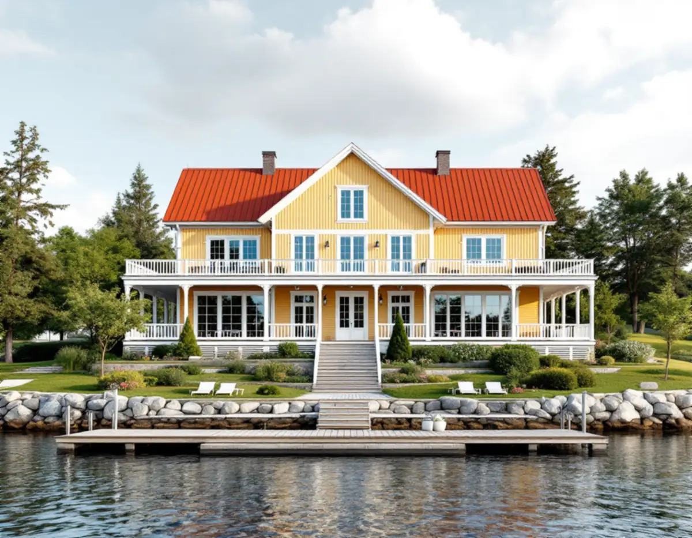
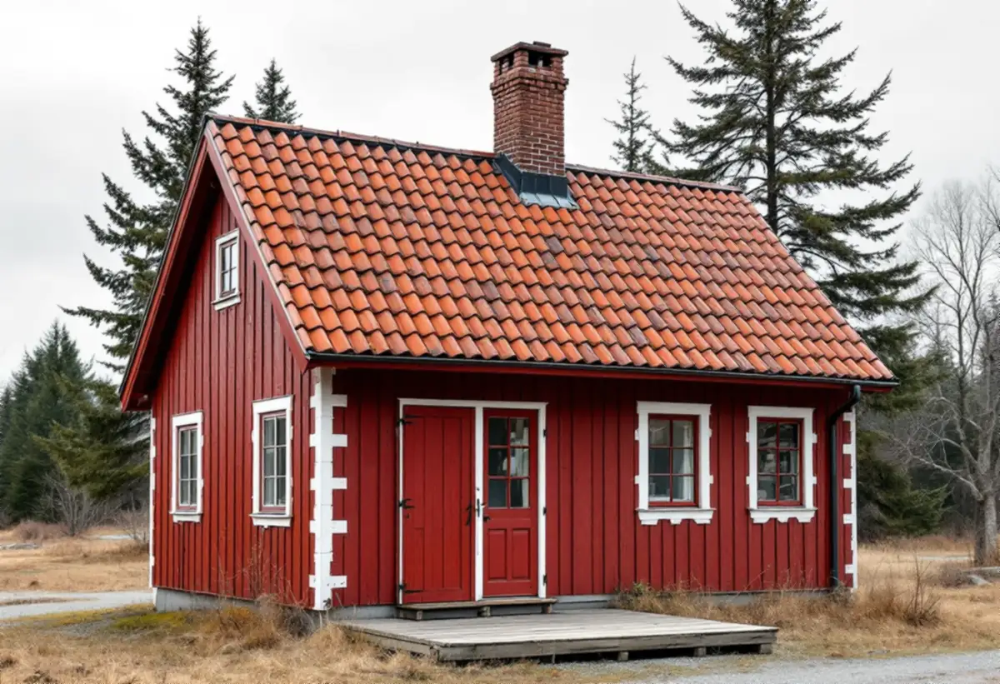

Husets säsong och klassning
Vi tar reda på när huset byggdes, om det är markerat blått eller grönt och vad detaljplanen säger.

I Österåker handlar en takrenovering ofta om ett hus som byggdes för sommaren och i dag är ett helårshem.
Skicka gärna en bild på taket.
Något blev fel. Kontrollera uppgifterna eller ring 08 12 410 276.
Vi tittar på jobbet på plats innan du får offert.
Du ser vad som ingår och vad det kostar.
Vi drar av ROT direkt och sköter ansökan.
Geal Entreprenad AB, Bromma. Org.nr 559303-7566.

Det kan vara en sekelskiftesvilla med glasveranda vid Resarö ström, en sportstuga från 1930-talet eller ett fritidshus från 1950–60-talen. Taket ska då fungera för ett hus som värms hela vintern, utan att det tar bort det som gör miljön värdefull.
Enligt SCB fanns det 13 488 bostäder i småhus i Österåker år 2024. Ett område där övergången från sommarboende till helårsboende syns tydligt är Svinninge. Kommunens kulturmiljöprogram för halvön, framtaget 2008 som underlag för planarbete och bygglov, beskriver ett blandområde där helårsboendet stadigt ökar: vid inventeringen var drygt 60 procent av fastigheterna bebodda året runt.
Halvön har tre årsringar som syns tydligt. Kring Nantes brygga byggdes ett trettiotal grosshandlarvillor på stora strandtomter runt sekelskiftet 1900, och den äldsta, Olivehäll, uppfördes 1884. På 1930-talet kom sportstugorna, och först på 1950–60-talen tog byggandet av fritidshus och permanentbostäder fart. 1969 tillkom tolv kedjehus vid Korallstigen.
Programmet konstaterar att omvandlingen till permanentboende har pågått under lång tid. Därför börjar vi med frågan om när huset byggdes och för vilken säsong, innan vi pratar material.
Programmet räknar upp vad som bär värdet i de stora sommarvillorna: hög naturstensgrund, stomme av resvirke, liggande fasspontpanel, murade skorstenar, utskjutande taksprång och taktäckning av rött tegel eller ståndfalsad plåt i skivtäckning. I Nantes och Svinningeudd är herrgårdsvillan med frontespis och veranda mot vattnet den klart vanligaste typen, men det finns också villor i engelsk cottagestil med torn, kupor och burspråk.
För en takrenovering betyder det att materialet oftast ska vara detsamma som förut. Ett plåttak läggs om med skivor och falsar som liknar de gamla, och ett tegeltak får tillbaka sina hela pannor. Det är detaljerna som kräver mest arbete: taksprånget, vindskivorna, plåten runt torn och kupor och avslutningen mot verandataket.
De röda stugorna med vita knutar, som blev populära efter sekelskiftet, har sadeltak, brutet tak eller valmat tak. På de två senare finns fler takfall och fler hörn där vatten kan leta sig in, och det är vid de vinklarna vi lägger mest tid när underlaget byts. Läs mer om falsade plåttak eller om plåtslageri.
I Svinninge har bebyggelsen klassificerats i två nivåer. En byggnad som är markerad blå räknas som särskilt värdefull och en omistlig del av miljön. En grön byggnad är värdefull från kulturhistorisk synpunkt eller ingår i ett område av den karaktären. Vad som gäller för det enskilda huset står i respektive detaljplan. Därtill är delar av Nantes och Svinningeudd utpekade som värdefullt område, där alla husens utformning har betydelse för helheten.
På kommunens sida om kulturhistoriska byggnader står att bygglov i regel krävs för till exempel fasadändring om fastigheten ligger i ett särskilt värdefullt område eller om byggnaden är särskilt värdefull. Kommunen rekommenderar att man kontaktar bygglovenheten innan arbetet börjar och påpekar att det går att söka frivilligt bygglov för att få åtgärden prövad.
Utanför sådana områden behövs normalt inget lov för att byta takmaterial eller kulör på ett en- eller tvåbostadshus sedan den 1 december 2025, enligt Boverket. Varsamhetskravet gäller ändå för alla hus, oavsett ålder och oavsett om lov krävs. Mer om reglerna finns under bygglov vid takbyte.
Sportstugorna byggdes som enkla envåningshus, ofta typhus, och vinterbonades för att kunna användas även på vintern. När ett sådant hus blir helårsbostad och vinden isoleras ändras förhållandena under taket. Varm inomhusluft når kallare ytor, och om luftspalten är för liten eller takfoten saknar ventilation samlas fukt mot råsponten.
Vi tittar därför på vinden innan vi bestämmer något om ytskiktet. Behöver isoleringen kompletteras gör vi det samtidigt som taket läggs om, så att ventilationen planeras för det nya läget. Läs mer under isolering av vinden.
Programmet beskriver ett kuperat landskap med skog, våtmark och berg i dagen, och ett vägnät från mitten av 1800-talet med smala, slingrande grusvägar som är en del av kulturvärdet. Många tomter sluttar ner mot stranden, och den obebyggda sluttande marken mellan hus och strand räknas till det som bär kulturvärdet.
Det påverkar hur ett takjobb planeras. Var kan containern stå utan att skada vägkanten, var kan ställningen förankras på en sluttande tomt, och hur når en lastbil fram? Det reder vi ut vid platsbesöket. Se även takläggare i Österåker och fasadrenovering i Österåker om panelen ska ses över samtidigt.
Vi tar reda på när huset byggdes, om det är markerat blått eller grönt och vad detaljplanen säger.
Råspont, papp och ventilation kontrolleras, särskilt på hus som byggts för sommarbruk.
Tegel läggs tillbaka och plåt ersätts med skivor och falsar som liknar originalet.
Taksprång, vindskivor och plåt runt kupor och verandatak görs om i samma arbete.
Container, ställning och leveranser planeras efter grusväg och sluttande tomt.
Vi rensar eller byter rännor och går igenom taket tillsammans med dig.
Rotavdraget ger 30 procent av arbetskostnaden tillbaka, med ett tak på 50 000 kr per person och år. Tillsammans med rutavdrag kan det bli högst 75 000 kr. Material och resor räknas inte in, och vi drar av beloppet på fakturan, enligt Skatteverkets regler.
Avdraget gäller även för ett fritidshus som du äger och använder, så det spelar ingen roll om villan vid Nantes ännu bara används på sommaren. Mer finns under rotavdrag för takarbete.
I Österåker styrs kostnaden mest av hur mycket råspont som är skadad, hur många takfall, kupor och verandatak huset har, om plåten ska formas efter originalet och hur lätt det är att etablera sig på tomten. Läs mer om vad en takrenovering kostar eller räkna på ditt tak i kalkylatorn för takbyte. Ska hela taket bytas, läs om takbyte i Österåker.
Takbyte, besiktning och plåtarbeten.
Takläggare i Österåker →Så fungerar en omläggning.
Takrenovering och takomläggning →Det här styr priset.
Vad kostar en takrenovering? →Räkna på takytan och ROT.
Takbyte-kalkylator →Villaområden och gårdar.
Takrenovering i Vallentuna →Näsbypark, Viggbyholm och Gribbylund.
Takrenovering i Täby →Roslagen, skärgård och fritidshus.
Takrenovering i Norrtälje →Eller ring 08 12 410 276, mån–fre 08–17.
Skicka gärna en bild på taket.
Något blev fel. Kontrollera uppgifterna eller ring 08 12 410 276.